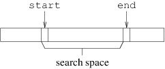

In the previous section, we discussed how linked lists could be used to implement a dictionary. An alternative to a linked list would be an array. A couple of other alternatives are the non-generic System.Collections.ArrayList or the generic System.Collections.Generic.List<T>. These classes are similar to singly-dimensioned arrays, but they can grow as needed. In this respect, they are like a StringBuilder, but instead of storing chars, an ArrayList stores objects and a List<T> stores instances of the type parameter T. Elements can be retrieved from instances of these classes using indexing, just like retrieving an element from an array.
Assuming we restrict the keys to be sub-types of IComparable<TKey>, where TKey is the key type, we can store the keys in order in any of these data structures. We can then search for a key in the same way as we described for a linked list. However, such a search can be expensive - to search for a key that is larger than any key in the dictionary, we need to examine all of the keys. We say that the performance of this sequential search is in O(n), where n is the number of keys in the dictionary. This means that as n grows, the time required for the search is at worst proportional to n. We can improve this performance dramatically for arrays or array-like structures such as ArrayLists or List<T>s using a technique called binary search (there isn't much we can do to improve the performance of searching a linked list, as its structure restricts us to traversing it sequentially). The idea is similar to what humans do when looking for something in an ordered list such as a dictionary or an index of a book. Rather than looking sequentially through the sequence, we first look in the middle and narrow our search space depending on how what we are looking for compares with what we are looking at. For example, if we are looking for "Les Miserables", we first look in the middle of the sequence, where we might see "Othello". Because "Les Miserables" is alphabetically less than "Othello", we can narrow the search space to those titles less than "Othello". In the middle of this search space, we might find the title, "Great Expectations". Because "Les Miserables" is alphabetically greater than "Great Expectations", we narrow the search space to those titles greater than "Great Expectations" and less than "Othello". We continue narrowing in this way until either we find "Les Miserables" or the search space becomes empty, implying that the data set does not contain this title.In a binary search, each lookup is as nearly as possible in the center of the search space. This means that each time we look at an entry, we either find what we are looking for, or we decrease the size of the search space to at most half its previous size. For large data sets the search space therefore shrinks rapidly. For example, if we start with 1,000,000 elements and repeatedly reduce the search space to at most half its previous size, after 20 such reductions, we are left with nothing. Likewise, if we start with 1,000,000,000 elements, 30 such reductions in size lead to an empty search space.
To implement this algorithm, we need to keep track of the search space. We will use two int variables, start and end. start will keep track of the first index in the search space, while end will keep track of the first index past the search space, as follows:
The way we have defined end may seem unnatural at first, but because it simplifies various calculations, it is a common way of describing a search space. For example, the number of elements in such a search space is simply the difference between end and start, and to describe an entire array, we can initialize start to 0 and end to the array's length.We then need a loop to iterate as long as this search space is nonempty (we can return from inside this loop if we find what we are looking for). On each iteration, we need to find the midpoint of the search space. This midpoint is simply the average of start and end - i.e., their sum divided by 2. We need to be a bit careful here because we are doing integer division, which may involve rounding. As a result, we may not get exactly the average. In any case, we need to ensure that the index we compute is within the search space - otherwise, we may not reduce the search space, and an infinite loop will result. Because the search space is nonempty, start < end; hence, the true average is strictly between start and end. If this average is not an integer, the result will be rounded down to the next integer. Because start is an integer, this result will be no less than start, but less than end; hence it will be in the search space.
Once we have computed this midpoint, we need to compare the key of the element at that location with the key we are looking for. Recall that we use the CompareTo method to do this comparison. Note that for large key types, the CompareTo method can be expensive. For this reason, it is best to call the CompareTo method only once for a given pair of keys, and if necessary, save the result it returns in order to make more than one comparison between this result and 0.Thus, once we have obtained the result of the CompareTo method, we need to determine which of the three cases we have. If the keys are equal, we should be able to return. If the key we are looking for is less than the key at the midpoint, we need to adjust end. Otherwise, we need to adjust start.
If the loop finishes without returning, then the search space is empty; hence, the key we are looking for is not in the data set. However, start will end up at the point at which this key could be inserted; hence, the binary search can be used for both lookups and insertions.Binary search is a very efficient way to search an ordered array-like structure. In particular, it always makes no more than O(log n) comparisons, where n is the number of elements in the data set. The log function grows very slowly - much more slowly than n.